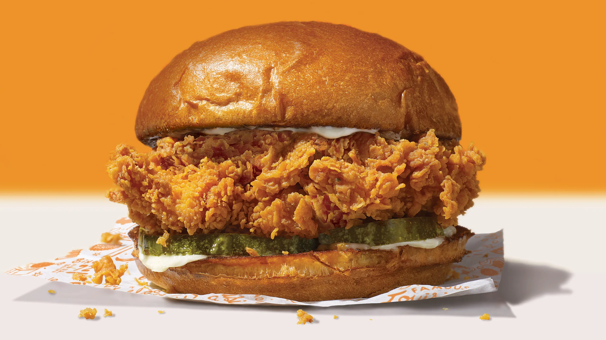

Chicken Sandwich

Description
THE BEST CHICKEN SANDWICH KNOWN TO MANKIND. WHEN YOU MAKE THIS YOUR LIFE WILL IMPROVE IMMEDIATELY.
Before I get to the recipe, allow me to write a story of the last decade of my life separated into 12 paragraphs with 1-2 ads between each one.
Ingredients
Marinade
- Buttermilk - 2 cups
- Salt - 2 tsp
- Garlic powder - 2 tsp
- Serrano pepper powder - 1 tsp
Flour Mix
- Flour - 3 cups
- Salt - 2.5 tsp
- Garlic powder - 2 tsp
- Paprika - 1.5 tsp
- Black pepper - 0.5 tsp
- Cayenne pepper - 1 tsp
The Sauce
- Mayo - 3/4 cup
- Garlic - 8 cloves
- Salt - Enough for preference
- Paprika - 1 tsp
- Lemon Juice - Enough for preference
Steps
Fried Chicken Marinade
- Toss chicken in marinade, let sit for an hour minimum or overnight maximum.
Dredge
- Add all ingredients in a medium sized container Tip: for extra flaky bits – add droplets of marinade into dredge and mix together forming baby clumps)
- Make sure chicken is coated in flour and place on baking sheet with a rack. Do not pile on top of each other.
Frying
- Fill a cast iron pan with a neutral oil about halfway full. Using a fry or candy thermometer, heat oil to 350 degrees. Once heated, drop the chicken away from you and fry until golden brown with an internal temperature of 165 degrees. Take out of the oil into a sheet tray with a rack on top to cool.
Mayonnaise
- Combine all ingredients in a bowl.
Assembly
- Cut pickles lengthwise, not in rounds
- Toasted buns
- Mayo on bottom bun
- Pickles on the bottom bun
- Mayo on top bun
- Chicken in the middle